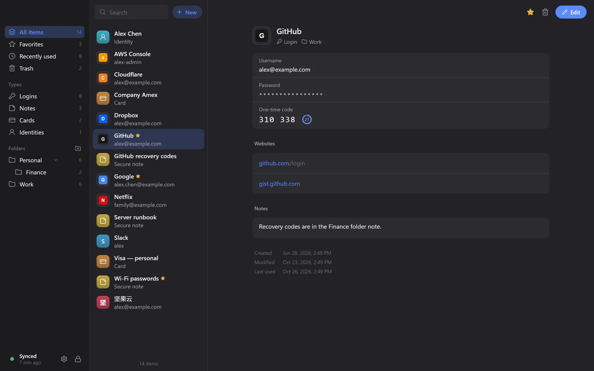
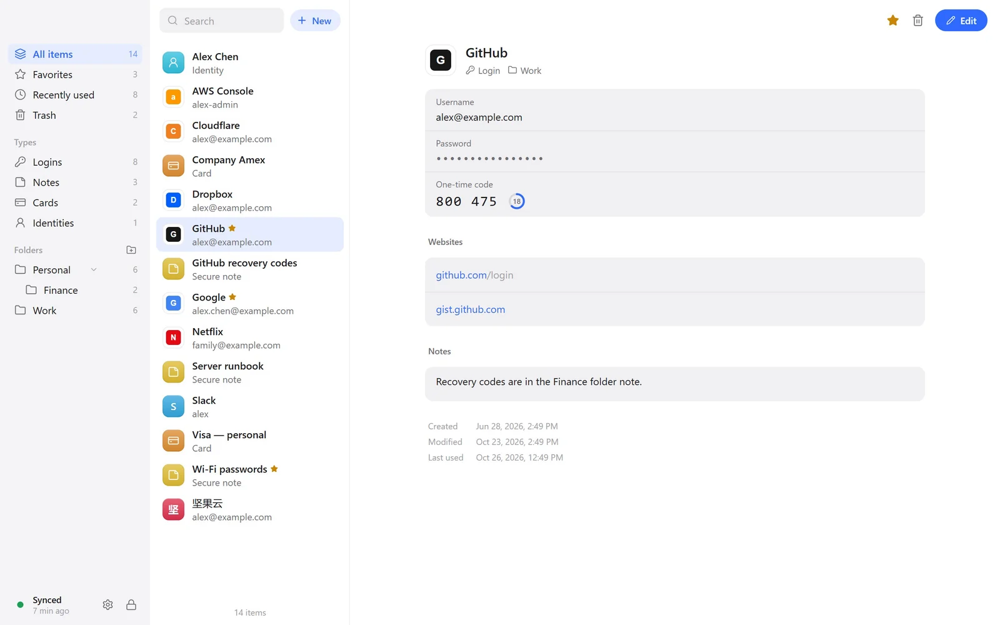
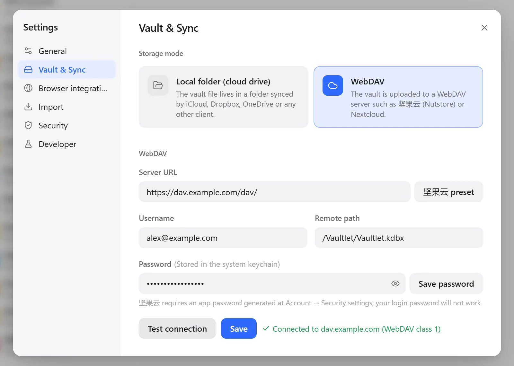
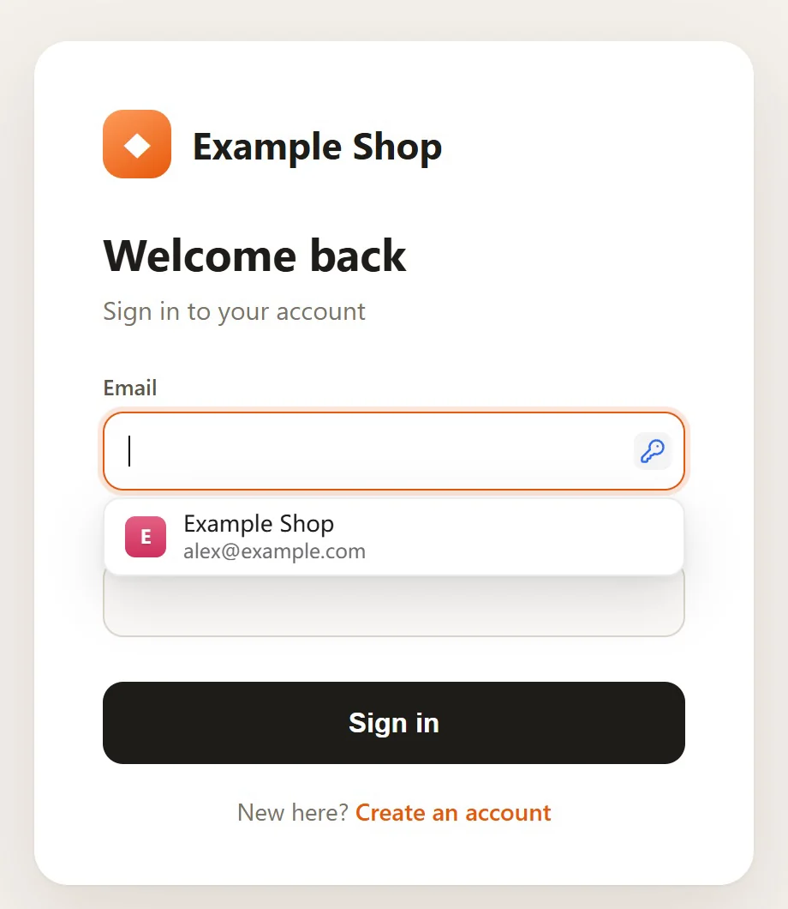
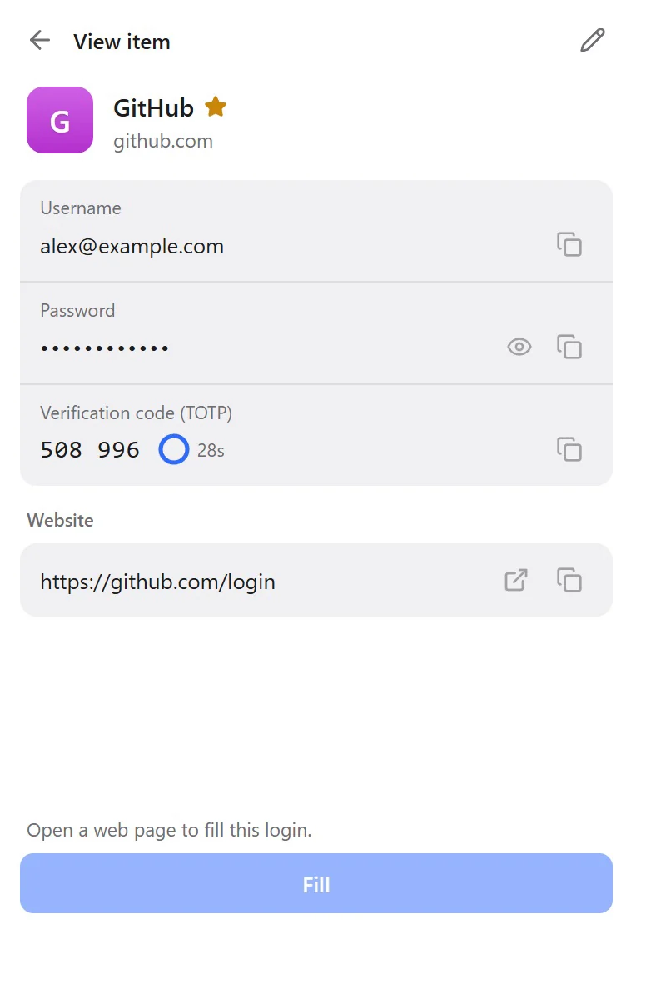
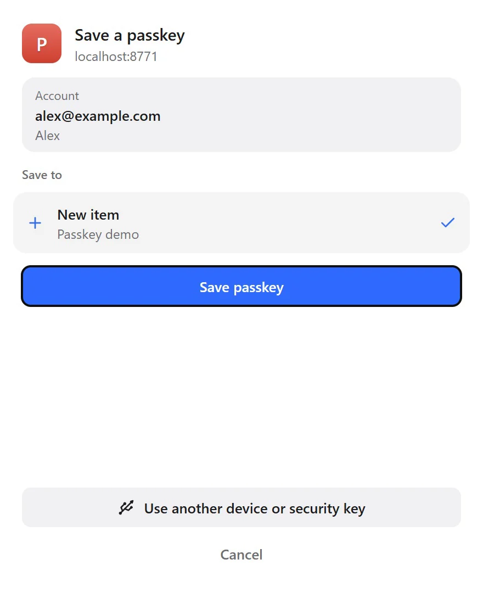
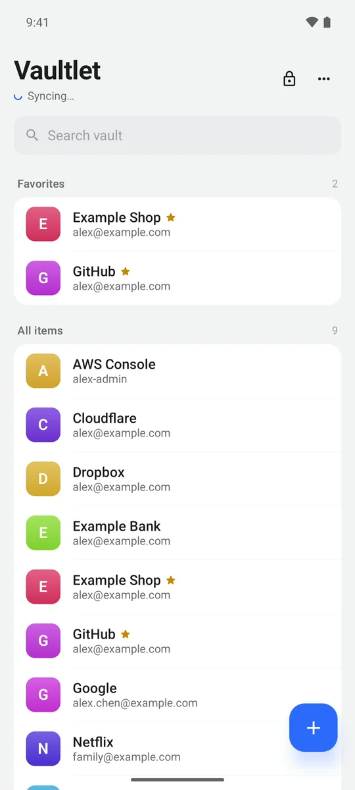
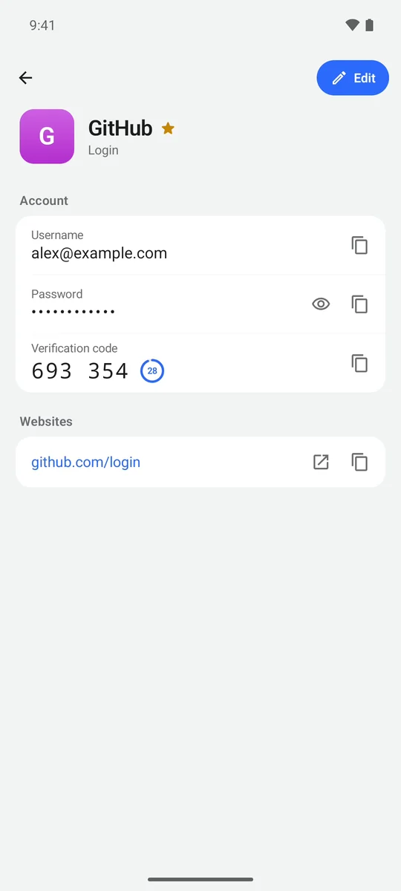
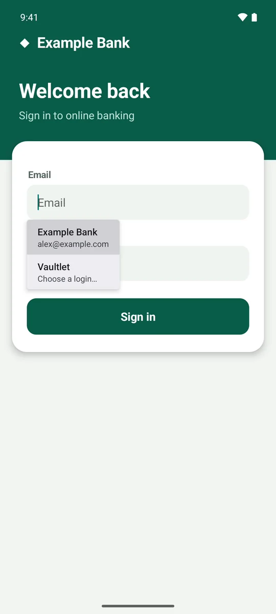

Your passwords.
Your files.
Your cloud.
Vaultlet keeps your whole vault in one encrypted file that you own, and syncs it through the cloud drive or WebDAV server you already use. No account, no server, nothing to trust but your own devices.
macOS · Windows · Linux · Android · Chrome · Edge · Brave · Firefox


See it in four minutes
Desktop, WebDAV sync, the browser extension, passkeys, Android, and a login edited on the phone showing up on the desktop. Recorded from the real apps with demo data.
Everything a password manager should do. Minus the server.
One encrypted file, in a place you choose
Put the vault in an iCloud Drive, Dropbox or OneDrive folder, or connect a WebDAV server such as Nutstore (坚果云) or Nextcloud. Only the encrypted file ever leaves your device.
- Edits from several devices merge per entry; the older version goes to history
- Works offline, uploads when you are back online
- The WebDAV app password stays in the system keychain

Fast, quiet and native
A clean app for macOS, Windows and Linux that searches as you type, shows live two-factor codes and copies anything with one click.
- Password generator, folders, favorites and custom fields
- Import from Chrome, Edge, Brave, Firefox, Safari or Bitwarden
- Auto-lock and clipboard clearing; light and dark themes
Fills, saves and edits logins where you need them
On a login page Vaultlet suggests the right account and fills it with one click. Sign up somewhere new and it offers to save the login. The popup searches your vault, copies two-factor codes, edits logins and generates passwords.
- Chrome, Edge, Brave and Firefox
- Talks to the desktop app over an encrypted, paired channel


Passkeys, kept in your own vault
Create a passkey on a website and Vaultlet stores it next to your login; next time, sign in with it. The private key never leaves the desktop app, which checks the site before it signs anything.
- Stored in the KeePassXC passkey format
- Passkeys imported from Bitwarden work too

The same vault on your phone
Unlock with your fingerprint, browse and copy with live two-factor codes, and let Vaultlet fill logins in other apps. The vault syncs over WebDAV and stays encrypted on the phone, so it works offline.
- Fingerprint key in the Android Keystore, reset when fingerprints change
- Screenshots blocked, clipboard cleared after 30 seconds
- On iPhone and iPad, open the same file in KeePassium or Strongbox



How the extension reaches your vault
The vault and its keys stay in the desktop app. The extension only ever gets what you ask it to fill.
- Web page
- Vaultlet extension
- vaultlet-host
- Vaultlet desktop appvault + keys
You approve the pairing
The first time, the extension asks to connect and you approve it in the desktop app.
Encrypted end to end
Every message is sealed with NaCl box (X25519 + XSalsa20-Poly1305). The host in the middle only relays bytes.
Locked means locked
While the desktop app is locked, the extension can't fill or read anything.
Download Vaultlet
Free and open source. Desktop apps and extensions are built from source by GitHub Actions.
Windows
Installer (.exe) or .msi
macOS
Apple Silicon (.dmg)
Linux
AppImage · .deb · .rpm
Android
APK, Android 8.0+
Chrome · Edge · Brave
Extension (.zip)
Firefox
Extension (.zip)
macOS first launch
The app is not signed with an Apple Developer ID yet, so macOS calls a downloaded copy "damaged". After moving it to Applications, run once:
xattr -cr /Applications/Vaultlet.appBrowser extension
It isn't in the browser stores yet. Unzip it, then in Chrome / Edge / Brave open the extensions page, turn on developer mode and choose "Load unpacked". Firefox loads it as a temporary add-on from about:debugging. Then click the extension icon, choose Connect, and approve in the desktop app (Settings → Browser integration must be applied once).
Android
Allow installing apps from the place you open the APK. For Nutstore, use an app password from Account → Security, not your login password. Turn on autofill under Settings → Passwords & accounts → Autofill service.
Questions
Does Vaultlet upload my passwords anywhere?
No. There is no Vaultlet server or account. Encryption and decryption happen on your devices; sync only copies the encrypted file to the folder or WebDAV server you choose.
What if I forget my master password?
Nobody can recover it, including us: the vault is encrypted with a key derived from it. Keep it somewhere safe, and keep backups of the vault file.
Can I use it on iPhone or iPad?
There is no iOS app yet. Because the vault is a standard KDBX 4 file, you can open it with KeePassium or Strongbox from the same cloud folder.
Can I bring my existing passwords?
Yes: import the CSV your browser exports (Chrome, Edge, Brave, Firefox, Safari), or a Bitwarden export with its passkeys and two-factor secrets. Importing again only adds what is new. KDBX 4 files from other KeePass apps open directly.
Has Vaultlet been security audited?
Not yet. It is a personal open-source project built on standard formats and well-known libraries; read the code, and please report vulnerabilities privately as described in SECURITY.md.